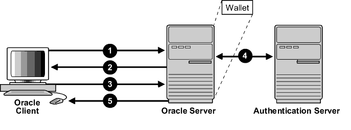

23 Configuring Transport Layer Security Authentication
You can configure Oracle Database to use Transport Layer Security authentication.
- Transport Layer Security and Secure Sockets Layer
Netscape Communications Corporation designed Transport Layer Security (TLS), previously called Secure Sockets Layer (SSL), to secure network connections. - How Oracle Database Uses Transport Layer Security for Authentication
Transport Layer Security works with the core Oracle Database features such as encryption and data access controls. - How Transport Layer Security Works in an Oracle Environment: The TLS Handshake
When a network connection over Transport Layer Security is initiated, the client and server perform a TLS handshake before performing the authentication. - Public Key Infrastructure in an Oracle Environment
A public key infrastructure (PKI) is a substrate of network components that provide a security underpinning, based on trust assertions, for an entire organization. - Transport Layer Security Combined with Other Authentication Methods
You can configure Oracle Database to use TLS concurrently with database user names and passwords, RADIUS, and Kerberos. - Transport Layer Security and Firewalls
Oracle Database supports two application proxy-based and stateful packet inspection of firewalls. - Transport Layer Security Usage Issues
You should be aware of TLS usage issues, such as communication with other Oracle products and types of supported authentication and encryption methods. - Transport Layer Security Connection without a Client Wallet
A Transport Layer Security (TLS) connection that uses a common root certificate for the database server does not require a client wallet. - Transport Layer Security Connection with a Client Wallet
You must configure Transport Layer Security on the server, and then the client. - Oracle Wallet Search Order
Oracle Database provides several routes for finding the wallet on a server in a Transport Layer Security (TLS) environment. - Transport Layer Security Connections in an Oracle Real Application Clusters Environment
You can configure Transport Layer Security (TLS) connections in an Oracle Real Application Clusters (Oracle RAC) environment by using Oracle RAC tools and modifying Oracle Database configuration files. - Configuring Transport Layer Security for Client Authentication and Encryption Using Microsoft Certificate Store
To perform this configuration with Microsoft Certificate Store (MCS), you use theorapkicommand-line tool to generate certificates and manipulate the Oracle wallets. - Troubleshooting the Transport Layer Security Configuration
Common errors may occur while you use the Oracle Database SSL adapter. - Certificate Validation with Certificate Revocation Lists
Oracle provides tools that enable you to validate certificates using certificate revocation lists. - Configuring Your System to Use Hardware Security Modules
Oracle Database supports hardware security modules that use APIs that conform to the RSA Security, Inc., PKCS #11 specification.
Parent topic: Managing Strong Authentication
23.1 Transport Layer Security and Secure Sockets Layer
Netscape Communications Corporation designed Transport Layer Security (TLS), previously called Secure Sockets Layer (SSL), to secure network connections.
- The Difference Between Transport Layer Security and Secure Sockets Layer
Transport Layer Security (TLS) is an incremental version of Secure Sockets Layer (SSL) version 3.0. - Using Transport Layer Security in a Multitenant Environment
Transport Layer Security (TLS) can be used in a multitenant environment for application containers.
Parent topic: Configuring Transport Layer Security Authentication
23.1.1 The Difference Between Transport Layer Security and Secure Sockets Layer
Transport Layer Security (TLS) is an incremental version of Secure Sockets Layer (SSL) version 3.0.
Although SSL was primarily developed by Netscape Communications Corporation, the Internet Engineering Task Force (IETF) took over development of it, and renamed it Transport Layer Security (TLS). TLS is an IETF standard.
Oracle Database Security Guide uses the terms Transport Layer Security and TLS instead of Secure Sockets Layer and SSL since the Oracle Database has implemented TLS. However, other documentation in the Oracle Database library may still use the earlier terms Secure Socket Layer and SSL. Where distinctions occur between how you use or configure these protocols, Oracle Database Security Guide specifies what is appropriate for either SSL or TLS.
The Oracle Database software still uses some of the older terminology. For example, the netmgr tool still uses the terms Secure Socket Layer and SSL. Many SSL parameters, such as SSL_SERVER_CERT_DN, use the older terminology. The names of cipher suites and the wording in error messages also use the SSL terminology. However, all these features work with and apply to Transport Layer Security.
Parent topic: Transport Layer Security and Secure Sockets Layer
23.1.2 Using Transport Layer Security in a Multitenant Environment
Transport Layer Security (TLS) can be used in a multitenant environment for application containers.
Parent topic: Transport Layer Security and Secure Sockets Layer
23.2 How Oracle Database Uses Transport Layer Security for Authentication
Transport Layer Security works with the core Oracle Database features such as encryption and data access controls.
By using Oracle Database TLS functionality to secure communications between clients and servers, you can
-
Use TLS to encrypt the connection between clients and servers
-
Authenticate any client or server, such as Oracle Application Server 10g, to any Oracle database server that is configured to communicate over TLS
You can use TLS features by themselves or in combination with other authentication methods supported by Oracle Database. For example, you can use the encryption provided by TLS in combination with the authentication provided by Kerberos. TLS supports any of the following authentication modes:
-
Only the server authenticates itself to the client
-
Both client and server authenticate themselves to each other
-
Neither the client nor the server authenticates itself to the other, thus using the TLS encryption feature by itself
See Also:
The TLS Protocol, version 3.0, published by the Internet Engineering Task Force, for a more detailed discussion of TLS
Parent topic: Configuring Transport Layer Security Authentication
23.3 How Transport Layer Security Works in an Oracle Environment: The TLS Handshake
When a network connection over Transport Layer Security is initiated, the client and server perform a TLS handshake before performing the authentication.
The handshake process is as follows:
-
The client and server establish which cipher suites to use. This includes which encryption algorithms are used for data transfers.
-
The server sends its certificate to the client, and the client verifies that the server's certificate was signed by a trusted CA. This step verifies the identity of the server.
-
Similarly, if client authentication is required, the client sends its own certificate to the server, and the server verifies that the client's certificate was signed by a trusted CA.
-
The client and server exchange key information using public key cryptography. Based on this information, each generates a session key. A key is shared by at least two parties (usually a client and a server) that is used for data encryption for the duration of a single communication session. Session keys are typically used to encrypt network traffic; a client and a server can negotiate a session key at the beginning of a session, and that key is used to encrypt all network traffic between the parties for that session. If the client and server communicate again in a new session, they negotiate a new session key. All subsequent communications between the client and the server is encrypted and decrypted by using this session key and the negotiated cipher suite.
The authentication process is as follows:
-
On a client, the user initiates an Oracle Net connection to the server by using TLS.
-
TLS performs the handshake between the client and the server.
-
If the handshake is successful, then the server verifies that the user has the appropriate authorization to access the database.
Parent topic: Configuring Transport Layer Security Authentication
23.4 Public Key Infrastructure in an Oracle Environment
A public key infrastructure (PKI) is a substrate of network components that provide a security underpinning, based on trust assertions, for an entire organization.
- About Public Key Cryptography
Traditional private-key or symmetric-key cryptography requires a single, secret key shared by two or more parties to establish a secure communication. - Public Key Infrastructure Components in an Oracle Environment
Public key infrastructure (PKI) components in an Oracle environment include a certificate authority, certificates, certificate revocation lists, and wallets.
Parent topic: Configuring Transport Layer Security Authentication
23.4.1 About Public Key Cryptography
Traditional private-key or symmetric-key cryptography requires a single, secret key shared by two or more parties to establish a secure communication.
This key is used to both encrypt and decrypt secure messages sent between the parties, requiring prior, secure distribution of the key to each party. The problem with this method is that it is difficult to securely transmit and store the key.
Public-key cryptography provides a solution to this problem, by employing public and private key pairs and a secure method for key distribution. The freely available public key is used to encrypt messages that can only be decrypted by the holder of the associated private key. The private key is securely stored, together with other security credentials, in an encrypted container called a wallet.
Public-key algorithms can guarantee the secrecy of a message, but they do not necessarily guarantee secure communications because they do not verify the identities of the communicating parties. To establish secure communications, it is important to verify that the public key used to encrypt a message does in fact belong to the target recipient. Otherwise, a third party can potentially eavesdrop on the communication and intercept public key requests, substituting its own public key for a legitimate key (the third-party attack).
In order to avoid such an attack, it is necessary to verify the owner of the public key, a process called authentication. Authentication can be accomplished through a certificate authority (CA), which is a third party that is trusted by both of the communicating parties.
The CA issues public key certificates that contain an entity's name, public key, and certain other security credentials. Such credentials typically include the CA name, the CA signature, and the certificate effective dates (From Date, To Date).
The CA uses its private key to encrypt a message, while the public key is used to decrypt it, thus verifying that the message was encrypted by the CA. The CA public key is well known and does not have to be authenticated each time it is accessed. Such CA public keys are stored in wallets.
Parent topic: Public Key Infrastructure in an Oracle Environment
23.4.2 Public Key Infrastructure Components in an Oracle Environment
Public key infrastructure (PKI) components in an Oracle environment include a certificate authority, certificates, certificate revocation lists, and wallets.
- Certificate Authority
A certificate authority (CA) is a trusted third party that certifies the identity of entities, such as users, databases, administrators, clients, and servers. - Certificates
A certificate is created when an entity's public key is signed by a trusted certificate authority (CA). - Certificate Revocation Lists
When a CA signs a certificate binding a public key pair to a user identity, the certificate is valid for a specified time. - Wallets
A wallet is a container that stores authentication and signing credentials, including private keys, certificates, and trusted certificates TLS needs. - Hardware Security Modules
The hardware security modules for SSL include devices to handle various functions and hardware devices to store cryptographic information.
Parent topic: Public Key Infrastructure in an Oracle Environment
23.4.2.1 Certificate Authority
A certificate authority (CA) is a trusted third party that certifies the identity of entities, such as users, databases, administrators, clients, and servers.
When an entity requests certification, the CA verifies its identity and grants a certificate, which is signed with the CA's private key.
Different CAs may have different identification requirements when issuing certificates. Some CAs may verify a requester's identity with a driver's license, some may verify identity with the requester's fingerprints, while others may require that requesters have their certificate request form notarized.
The CA publishes its own certificate, which includes its public key. Each network entity has a list of trusted CA certificates. Before communicating, network entities exchange certificates and check that each other's certificate is signed by one of the CAs on their respective trusted CA certificate lists.
Network entities can obtain their certificates from the same or different CAs.
Related Topics
23.4.2.2 Certificates
A certificate is created when an entity's public key is signed by a trusted certificate authority (CA).
A certificate ensures that an entity's identification information is correct and that the public key actually belongs to that entity.
A certificate contains the entity's name, public key, and an expiration date, as well as a serial number and certificate chain information. (A certificate chain is an ordered list of certificates containing an end-user or subscriber certificate and its certificate authority certificate.) It can also contain information about the privileges associated with the certificate.
When a network entity receives a certificate, it verifies that it is a trusted certificate, that is, one that has been issued and signed by a trusted certificate authority. A certificate remains valid until it expires or until it is revoked.
23.4.2.3 Certificate Revocation Lists
When a CA signs a certificate binding a public key pair to a user identity, the certificate is valid for a specified time.
However, certain events, such as user name changes or compromised private keys, can render a certificate invalid before the validity period expires. When this happens, the CA revokes the certificate and adds its serial number to a Certificate Revocation List (CRL). The CA periodically publishes CRLs to alert the user population when it is no longer acceptable to use a particular public key to verify its associated user identity.
When servers or clients receive user certificates in an Oracle environment, they can validate the certificate by checking its expiration date, signature, and revocation status. Certificate revocation status is checked by validating it against published CRLs. If certificate revocation status checking is turned on, then the server searches for the appropriate CRL depending on how this feature has been configured. The server searches for CRLs in the following locations in this order:
-
Local file system
-
Oracle Internet Directory
-
CRL Distribution Point (CRL DP), a location specified in the CRL Distribution Point (CRL DP) X.509, version 3, certificate extension when the certificate is issued. A CRL DP is an optional extension specified by the X.509 version 3 certificate standard, which indicates the location of the Partitioned CRL where revocation information for a certificate is stored. Typically, the value in this extension is in the form of a URL. CRL DPs allow revocation information within a single certificate authority domain to be posted in multiple CRLs. CRL DPs subdivide revocation information into more manageable pieces to avoid proliferating voluminous CRLs, thereby providing performance benefits. For example, a CRL DP is specified in the certificate and can point to a file on a Web server from which that certificate's revocation information can be downloaded.
Note:
To use CRLs with other Oracle products, refer to the specific product documentation. This implementation of certificate validation with CRLs is only available in the Oracle Database 12c release 1 (12.1) and later SSL adapter.
Related Topics
23.4.2.4 Wallets
A wallet is a container that stores authentication and signing credentials, including private keys, certificates, and trusted certificates TLS needs.
In an Oracle environment, every entity that communicates over TLS must have a wallet containing an X.509 version 3 certificate, private key, and list of trusted certificates, with the exception of Diffie-Hellman.
Security administrators use Oracle Wallet Manager to manage security credentials on the server. Wallet owners use it to manage security credentials on clients. Specifically, you use Oracle Wallet Manager to do the following:
-
Generate a public-private key pair and create a certificate request
-
Store a user certificate that matches with the private key
-
Configure trusted certificates
See Also:
-
Oracle Database Enterprise User Security Administrator's Guide for information about Oracle Wallet Manager
-
Oracle Database Enterprise User Security Administrator's Guide for information about creating a new Oracle wallet
-
Oracle Database Enterprise User Security Administrator's Guide for information about managing trusted certificates in Oracle wallets
-
23.4.2.5 Hardware Security Modules
The hardware security modules for SSL include devices to handle various functions and hardware devices to store cryptographic information.
Oracle Database uses these devices for the following functions:
-
Store cryptographic information, such as private keys
-
Perform cryptographic operations to off load RSA operations from the server, freeing the CPU to respond to other transactions
Cryptographic information can be stored on two types of hardware devices:
-
(Server-side) Hardware boxes where keys are stored in the box, but managed by using tokens.
-
(Client-side) Smart card readers, which support storing private keys on tokens.
An Oracle environment supports hardware devices using APIs that conform to the RSA Security, Inc., Public-Key Cryptography Standards (PKCS) #11 specification.
Note:
Currently, SafeNET, nCipher, and Utimaco devices are certified with Oracle Database
Related Topics
23.5 Transport Layer Security Combined with Other Authentication Methods
You can configure Oracle Database to use TLS concurrently with database user names and passwords, RADIUS, and Kerberos.
- Architecture: Oracle Database and Transport Layer Security
It is important to understand the architecture of how Oracle Database works with TLS. - How Transport Layer Security Works with Other Authentication Methods
Transport Layer Security can be used with other authentication methods that Oracle Database supports.
Parent topic: Configuring Transport Layer Security Authentication
23.5.1 Architecture: Oracle Database and Transport Layer Security
It is important to understand the architecture of how Oracle Database works with TLS.
Figure 20-4 , which displays the Oracle Database implementation of Transport Layer Security architecture, shows that Oracle Databases operates at the session layer on top of TLS and uses TCP/IP at the transport layer. The session layer is a network layer that provides the services needed by the presentation layer entities that enable them to organize and synchronize their dialogue and manage their data exchange. This layer establishes, manages, and terminates network sessions between the client and server. The transport layer is a networking layer that maintains end-to-end reliability through data flow control and error recovery methods. Oracle Net Services uses Oracle protocol supports for the transport layer.
This separation of functionality lets you employ TLS concurrently with other supported protocols.
Related Topics
23.5.2 How Transport Layer Security Works with Other Authentication Methods
Transport Layer Security can be used with other authentication methods that Oracle Database supports.
Figure 23-1 illustrates a configuration in which Transport Layer Security is used in combination with another authentication method.
Figure 23-1 Transport Layer Security in Relation to Other Authentication Methods

Description of "Figure 23-1 Transport Layer Security in Relation to Other Authentication Methods"
In this example, Transport Layer Security is used to establish the initial handshake (server authentication), and an alternative authentication method is used to authenticate the client. The process is as follows:
-
The client seeks to connect to the Oracle database server.
-
Transport Layer Security performs a handshake during which the server authenticates itself to the client and both the client and server establish which cipher suite to use.
-
Once the Transport Layer Security handshake is successfully completed, the user seeks access to the database.
-
The Oracle database server authenticates the user with the authentication server using a non-TLS authentication method such as Kerberos or RADIUS.
-
Upon validation by the authentication server, the Oracle database server grants access and authorization to the user, and then the user can access the database securely by using TLS.
23.6 Transport Layer Security and Firewalls
Oracle Database supports two application proxy-based and stateful packet inspection of firewalls.
These firewalls are as follows:
-
Application proxy-based firewalls: Examples are Network Associates Gauntlet, or Axent Raptor.
-
Stateful packet inspection firewalls: Examples are Check Point Firewall-1, or Cisco PIX Firewall.
When you enable TLS, stateful inspection firewalls behave like application proxy firewalls because they do not decrypt encrypted packets.
Firewalls do not inspect encrypted traffic. When a firewall encounters data addressed to a TLS port on an intranet server, it checks the target IP address against its access rules and lets the TLS packet pass through to permitted TLS ports, rejecting all others.
Parent topic: Configuring Transport Layer Security Authentication
23.7 Transport Layer Security Usage Issues
You should be aware of TLS usage issues, such as communication with other Oracle products and types of supported authentication and encryption methods.
Consider the following issues when using TLS:
-
TLS use enables secure communication with other Oracle products, such as Oracle Internet Directory.
-
Because TLS supports both authentication and encryption, the client/server connection is somewhat slower than the standard Oracle Net TCP/IP transport (using native encryption).
-
Each TLS authentication mode requires configuration settings.
Note:
If you configure TLS encryption, you must disable non-TLS encryption.
23.8 Transport Layer Security Connection without a Client Wallet
A Transport Layer Security (TLS) connection that uses a common root certificate for the database server does not require a client wallet.
- About Transport Layer Security Connections without a Client Wallet
You can configure a Transport Layer Security (TLS) connection without a client wallet if your environment meets certain requirements. - Configuring a Transport Layer Security Connection without a Client Wallet
Before you can configure Transport Layer Security (TLS) without using client wallets, you must ensure that the database does not require client authentication.
Parent topic: Configuring Transport Layer Security Authentication
23.8.1 About Transport Layer Security Connections without a Client Wallet
You can configure a Transport Layer Security (TLS) connection without a client wallet if your environment meets certain requirements.
Consider using a TLS connection without a client wallet if your environment meets these requirements:
- The client certificate is not used as a means of user authentication to the database. Only the server certificate is required to establish a TLS connection.
- The server certificate was issued by a certificate authority (CA) whose certificate is available in the system’s default certificate store (common root certificate).
- The Oracle database server is configured to allow TLS connections. (Set
SSL_CLIENT_AUTHENTICATION=FALSE).
This is the most common type of configuration as long as the root certificate for the database server already exists in the local system certificate store. This configuration can be used for both cloud and on-premises databases. This configuration enables the client to verify server certificates without having to configure its own wallet.
Note the following:
- For the C and Instant Client database drivers (and therefore, SQL*Plus), the walletless feature is only available on Microsoft Windows and Linux x64.
- For the JDBC-thin driver, the walletless feature is available on all platforms.
Related Topics
23.9 Transport Layer Security Connection with a Client Wallet
You must configure Transport Layer Security on the server, and then the client.
- Step 1: Configure Transport Layer Security on the Server
During installation, Oracle sets defaults on the Oracle database server and the Oracle client for TLS parameters, except the Oracle wallet location. - Step 2: Configure Transport Layer Security on the Client
When you configure SSL on the client, you configure the server DNs and use TCP/IP with TLS on the client. - Step 3: Log in to the Database Instance
After you have completed the configuration, you are ready to log in to the database.
Parent topic: Configuring Transport Layer Security Authentication
23.9.1 Step 1: Configure Transport Layer Security on the Server
During installation, Oracle sets defaults on the Oracle database server and the Oracle client for TLS parameters, except the Oracle wallet location.
- Step 1A: Confirm Wallet Creation on the Server
Before proceeding to the next step, confirm that a wallet has been created and that it has a certificate. - Step 1B: Specify the Database Wallet Location on the Server
Next, you are ready to specify a location on the server for the wallet. - Step 1C: Set the Transport Layer Security Cipher Suites on the Server (Optional)
Optionally, you can set the Transport Layer Security cipher suites. - Step 1D: Set the Required Transport Layer Security Version on the Server (Optional)
TheSSL_VERSIONparameter defines the version of TLS that must run on the systems with which the server communicates. - Step 1E: Set Transport Layer Security Client Authentication on the Server (Optional)
TheSSL_CLIENT_AUTHENTICATIONparameter controls whether the client is authenticated using TLS. - Step 1F: Set Transport Layer Security as an Authentication Service on the Server (Optional)
TheSQLNET.AUTHENTICATION_SERVICESparameter in thesqlnet.orafile sets the TLS authentication service. - Step 1G: Disable SSLv3 on the Server and Client (Optional)
SSLv3 refers to Secure Sockets Layer version 3. - Step 1H: Create a Listening Endpoint that Uses TCP/IP with Transport Layer Security on the Server
You can configure a listening endpoint to use TCP/IP with TLS on the server. - Step 1H: Restart the Database
To complete the configuration of Transport Layer Security on the server, you must restart the database.
Parent topic: Transport Layer Security Connection with a Client Wallet
23.9.1.1 Step 1A: Confirm Wallet Creation on the Server
Before proceeding to the next step, confirm that a wallet has been created and that it has a certificate.
Parent topic: Step 1: Configure Transport Layer Security on the Server
23.9.1.2 Step 1B: Specify the Database Wallet Location on the Server
Next, you are ready to specify a location on the server for the wallet.
Note:
The listener uses the wallet defined in the listener.ora file. It can use any database wallet. When SSL is configured for a server using Net Manager, the wallet location is entered into the listener.ora and the sqlnet.ora files. The listener.ora file is not relevant to the Oracle client.
To change the listener wallet location so that the listener has its own wallet, you can edit listener.ora to enter the new location.
Parent topic: Step 1: Configure Transport Layer Security on the Server
23.9.1.3 Step 1C: Set the Transport Layer Security Cipher Suites on the Server (Optional)
Optionally, you can set the Transport Layer Security cipher suites.
- About the Transport Layer Security Cipher Suites
A cipher suite is a set of authentication, encryption, and data integrity algorithms used for exchanging messages between network entities. - TLS Cipher Suite Authentication, Encryption, Integrity, and TLS Versions
Oracle Database supports a set of cipher suites that are set by default when you install Oracle Database. - Specifying Transport Layer Security Cipher Suites for the Database Server
First, you must specify the Transport Layer Security cipher suites for the database server.
Parent topic: Step 1: Configure Transport Layer Security on the Server
23.9.1.3.1 About the Transport Layer Security Cipher Suites
A cipher suite is a set of authentication, encryption, and data integrity algorithms used for exchanging messages between network entities.
During a Transport Layer Security handshake, two entities negotiate to see which cipher suite they will use when transmitting messages back and forth.
When you install Oracle Database, the Transport Layer Security cipher suites are set for you by default and negotiated in the order they are listed. You can override the default order by setting the SSL_CIPHER_SUITES parameter. Ensure that you enclose the SSL_CIPHER_SUITES parameter setting in parentheses (for example, SSL_CIPHER_SUITES=(tls_rsa_with_aes_128_cbc_sha256)). Otherwise, the cipher suite setting will not parse correctly.
You can prioritize the cipher suites. When the client negotiates with servers regarding which cipher suite to use, it follows the prioritization you set. When you prioritize the cipher suites, consider the following:
-
Compatibility. Server and client must be configured to use compatible cipher suites for a successful connection.
-
Cipher priority and strength. Prioritize cipher suites starting with the strongest and moving to the weakest to ensure the highest level of security possible.
-
The level of security you want to use.
-
The impact on performance.
Note:
Regarding Diffie-Hellman anonymous authentication:
-
If you set the server to employ this cipher suite, then you must also set the same cipher suite on the client. Otherwise, the connection fails.
-
If you use a cipher suite employing Diffie-Hellman anonymous, then you must configure the TLS client authentication on the server by setting the
SSL_CLIENT_AUTHENTICATIONparameter toFALSE. -
There is a known bug in which an OCI client requires a wallet even when using a cipher suite with DH_ANON, which does not authenticate the client.
-
23.9.1.3.2 TLS Cipher Suite Authentication, Encryption, Integrity, and TLS Versions
Oracle Database supports a set of cipher suites that are set by default when you install Oracle Database.
Table 23-1 lists the authentication, encryption, and data integrity types each cipher suite uses.
Table 23-1 Transport Layer Security Cipher Suites
| Cipher Suites | Authentication | Encryption | Data Integrity | TLS Compatibility |
|---|---|---|---|---|
|
|
ECDHE_ECDSA |
AES 128 GCM |
SHA256 (SHA-2) |
TLS 1.2 only |
|
|
ECDHE_ECDSA |
AES 128 CBC |
SHA-1 |
TLS 1.0 and later |
|
|
ECDHE_ECDSA |
AES 128 CBC |
SHA256 (SHA-2) |
TLS 1.2 only |
|
|
ECDHE_ECDSA |
AES 256 CBC |
SHA-1 |
TLS 1.0 and later |
|
|
ECDHE_ECDSA |
AES 256 CBC |
SHA384 (SHA-2) |
TLS 1.2 only |
|
|
ECDHE_ECDSA |
AES 256 GCM |
SHA384 (SHA-2) |
TLS 1.2 only |
|
|
RSA |
AES 128 CBC |
SHA256 (SHA-2) |
TLS 1.2 only |
|
|
RSA |
AES 128 GCM |
SHA256 (SHA-2) |
TLS 1.2 only |
|
|
RSA |
AES 128 CBC |
SHA-1 |
TLS 1.0 only |
|
|
RSA |
AES 256 CBC |
SHA-1 |
TLS 1.0 and later |
|
|
RSA |
AES 256 CBC |
SHA256 (SHA-2) |
TLS 1.2 only |
|
|
RSA |
AES 256 GCM |
SHA384 (SHA-2) |
TLS 1.2 only |
Table 23-2 lists cipher suites that you can use, but be aware that they do not the provide authentication of the communicating parties, and hence can be vulnerable to third-party attacks. Oracle recommends that you do not use these cipher suites to protect sensitive data. However, they are useful if the communicating parties want to remain anonymous or simply do not want the overhead caused by mutual authentication.
Table 23-2 SSL_DH Transport Layer Security Cipher Suites
| Cipher Suites | Authentication | Encryption | Data Integrity | TLS Compatibility |
|---|---|---|---|---|
|
|
DH anon |
3DES EDE CBC |
SHA-1 |
TLS 3.0 and later |
23.9.1.4 Step 1D: Set the Required Transport Layer Security Version on the Server (Optional)
The SSL_VERSION parameter defines the version of TLS that must run on the systems with which the server communicates.
Optionally, you can set the SSL_VERSION parameter in the sqlnet.ora or the listener.ora file.
You can require these systems to use any valid version. The default setting for this parameter in sqlnet.ora is undetermined, which is set by selecting Any from the list in the SSL tab of the Network Security window.
Note:
SSL 2.0 is not supported on the server side.
Related Topics
Parent topic: Step 1: Configure Transport Layer Security on the Server
23.9.1.5 Step 1E: Set Transport Layer Security Client Authentication on the Server (Optional)
The SSL_CLIENT_AUTHENTICATION parameter controls whether the client is authenticated using TLS.
You must set this parameter in the sqlnet.ora file on the server. The default value of SSL_CLIENT_AUTHENTICATION parameter is TRUE.
You can set the SSL_CLIENT_AUTHENTICATION to FALSE if you are using a cipher suite that contains Diffie-Hellman anonymous authentication (DH_anon).
Also, you can set this parameter to FALSE for the client to authenticate itself to the server by using any of the non-SSL authentication methods supported by Oracle Database, such as Kerberos or RADIUS.
Note:
There is a known bug in which an OCI client requires a wallet even when using a cipher suite with DH_ANON, which does not authenticate the client.
To set SSL_CLIENT_AUTHENTICATION to FALSE on the server:
Parent topic: Step 1: Configure Transport Layer Security on the Server
23.9.1.6 Step 1F: Set Transport Layer Security as an Authentication Service on the Server (Optional)
The SQLNET.AUTHENTICATION_SERVICES parameter in the sqlnet.ora file sets the TLS authentication service.
Set this parameter if you want to use TLS authentication in conjunction with another authentication method supported by Oracle Database. For example, use this parameter if you want the server to authenticate itself to the client by using TLS and the client to authenticate itself to the server by using Kerberos.
-
To set the
SQLNET.AUTHENTICATION_SERVICESparameter on the server, add TCP/IP with TLS (TCPS) to this parameter in thesqlnet.orafile by using a text editor. For example, if you want to use SSL authentication in conjunction with RADIUS authentication, set this parameter as follows:SQLNET.AUTHENTICATION_SERVICES = (TCPS, radius)
If you do not want to use TLS authentication in conjunction with another authentication method, then do not set this parameter.
Parent topic: Step 1: Configure Transport Layer Security on the Server
23.9.1.7 Step 1G: Disable SSLv3 on the Server and Client (Optional)
SSLv3 refers to Secure Sockets Layer version 3.
ADD_SSLV3_TO_DEFAULT sqlnet.ora parameter to FALSE on both the server and the client. ADD_SSLV3_TO_DEFAULT only applies if the SSL_VERSION parameter is not set. (which means that you are using the default list of SSL versions).
Parent topic: Step 1: Configure Transport Layer Security on the Server
23.9.1.8 Step 1H: Create a Listening Endpoint that Uses TCP/IP with Transport Layer Security on the Server
You can configure a listening endpoint to use TCP/IP with TLS on the server.
- Configure the listener in the
listener.orafile. Oracle recommends using port number 2484 for typical Oracle Net clients. - Restart the database.
Related Topics
Parent topic: Step 1: Configure Transport Layer Security on the Server
23.9.1.9 Step 1H: Restart the Database
To complete the configuration of Transport Layer Security on the server, you must restart the database.
Parent topic: Step 1: Configure Transport Layer Security on the Server
23.9.2 Step 2: Configure Transport Layer Security on the Client
When you configure SSL on the client, you configure the server DNs and use TCP/IP with TLS on the client.
- Step 2A: Confirm Client Wallet Creation
You must confirm that a wallet has been created on the client and that the client has a valid certificate. - Step 2B: Configure Server DN Matching and Use TCP/IP with TLS on the Client
Next, you are ready to configure server DN matching and use TCP/IP with Transport Layer Security (TLS) on the client. - Step 2C: Specify Required Client TLS Configuration (Wallet Location)
You can use Oracle Net Manager to specify the required client TLS configuration. - Step 2D: Set the Client Transport Layer Security Cipher Suites (Optional)
Optionally, you can set the Transport Layer Security cipher suites. Oracle Database provides default cipher suite settings. - Step 2E: Set the Required TLS Version on the Client (Optional)
TheSSL_VERSIONparameter defines the version of TLS that must run on the systems with which the client communicates. - Step 2F: Set TLS as an Authentication Service on the Client (Optional)
TheSQLNET.AUTHENTICATION_SERVICESparameter in thesqlnet.orafile sets the TLS authentication service. - Step 2G: Specify the Certificate to Use for Authentication on the Client (Optional)
If you have multiple certificates, then you can set theSQLNET.SSL_EXTENDED_KEY_USAGEparameter in thesqlnet.orafile to specify the correct certificate. - Step 2H: Check That the Connections Are Using Transport Layer Security
You can query theV$SESSIONandV$SESSION_CONNECT_INFOdynamic views to ensure that the client connections are using Transport Layer Security (TLS). - Step 2I: Restart the Database
To complete the configuration of Transport Layer Security on the client, you must restart the database.
Parent topic: Transport Layer Security Connection with a Client Wallet
23.9.2.1 Step 2A: Confirm Client Wallet Creation
You must confirm that a wallet has been created on the client and that the client has a valid certificate.
23.9.2.2 Step 2B: Configure Server DN Matching and Use TCP/IP with TLS on the Client
Next, you are ready to configure server DN matching and use TCP/IP with Transport Layer Security (TLS) on the client.
- About Configuring the Server DN Matching and Using TCP/IP with TLS on the Client
In addition to validating the server certificate's certificate chain, you can perform an extra check through server DN matching. - Configuring the Server DN Matching and Using TCP/IP with TLS on the Client
You must edit thetnsnames.oraandlistener.orafiles to configure the server DN matching and user TCP/IP with TLS on the client. - Use of the SSL_ALLOW_WEAK_DN_MATCH Parameter to Control SSL_SERVER_DN_MATCH
TheSSL_ALLOW_WEAK_DN_MATCHparameter controls how theSSL_SERVER_DN_MATCHparameter allows the service name for partial distinguished name matching and check the database server certificate.
Parent topic: Step 2: Configure Transport Layer Security on the Client
23.9.2.2.1 About Configuring the Server DN Matching and Using TCP/IP with TLS on the Client
In addition to validating the server certificate's certificate chain, you can perform an extra check through server DN matching.
You can configure the Oracle Net Service name to include server DN matching and to use TCP/IP with TLS on the client. To accomplish this, you must specify the server's distinguished name (DN) and TCPS as the protocol in the client network configuration files to enable server DN matching and TCP/IP with TLS connections. Server DN matching is optional, but Oracle recommends it because it adds a layer of security to the client: the client can then perform this check against the server.
Due to changes in the CA certificate format where the Organization Unit (OU) field will be removed starting in 2022, you may need to update your server certificate DN if you have set SSL_SERVER_DN_MATCH to TRUE. After you receive the new server certificate with the OU removed from the DN, you must update the client SSL_SERVER_CERT_DN parameter to match the new DN.
You can configure either partial DN matching or full DN matching. After you set the
SSL_SERVER_DN_MATCH parameter to TRUE, then
partial DN matching is performed automatically. The client will then check the server
certificate for the DN information. Full DN matching enables the client to match against
the complete DN of the server. If you want to perform a full DN match, then you must
specify the server's DN in the SSL_SERVER_CERT_DN parameter. To enable
either of these methods, you must set the SSL_SERVER_DN_MATCH parameter
to TRUE.
The ability to use either partial or full DN matching enables more flexibility based
on how you create and manage host certificates. For example, suppose the client tries to
connect to a server with hostname=finance.us.example.com. With partial
DN matching, the client checks the server's certificate to verify that
CN=finance.us.example.com is part of the server's DN.
You must manually edit the tnsnames.ora client network configuration file to specify the server's DN and the TCP/IP with SSL protocol. The tnsnames.ora file can be located on the client or in the LDAP directory. If it is located on the server, then it typically resides in the same directory as the listener.ora file. The tnsnames.ora file is typically located in the setting specified by the TNS_ADMIN environment variable. If TNS_ADMIN is not set, then tnsnames.ora resides in the following directory locations:
-
(UNIX)
$ORACLE_HOME/network/admin/ -
(Windows)
ORACLE_BASE\ORACLE_HOME\network\admin\
23.9.2.2.2 Configuring the Server DN Matching and Using TCP/IP with TLS on the Client
You must edit the tnsnames.ora and listener.ora files to configure the server DN matching and user TCP/IP with TLS on the client.
23.9.2.2.3 Use of the SSL_ALLOW_WEAK_DN_MATCH Parameter to Control SSL_SERVER_DN_MATCH
The SSL_ALLOW_WEAK_DN_MATCH parameter controls how the SSL_SERVER_DN_MATCH parameter allows the service name for partial distinguished name matching and check the database server certificate.
Starting in Oracle Database 23c, the behavior of the SSL_SERVER_DN_MATCH parameter has changed. Previously, only the database server certificate was checked for DN matching. With Oracle Database 23c, the listener and server certificates are both checked. Also, the SERVICE_NAME setting is not used to check during partial DN match anymore. The HOST setting can still be used for partial DN matching with the certificate DN and subject alternative name (SAN), on both the listener and server certificates.
You can set SSL_ALLOW_WEAK_DN_MATCH as follows:
TRUEenablesSSL_SERVER_DN_MATCHto check the database server certificate (but not the listener) and enable the service name to be used for partial DN matching. The search order on the client side is as follows: first, the host name, then the subject alternative name (SAN), and then the service name.FALSE(the default) disablesSSL_SERVER_DN_MATCHfrom checking service name matching. Instead, matching on the client side is based on a search for theHOSTsetting in the certificate DN, and if that is not available, then in the subject alternative name (SAN) field (but not the service name). The DN check is performed on the listener and the server.
If you used the service name for partial DN matching previously, then you must either get a new certificate or set SSL_ALLOW_WEAK_DN_MATCH to TRUE to revert to the pre-release 23c behavior. You are most likely using the same certificate for both the database server and listener, but if you are not, then you will either need to do one of the following:
- Get a new certificate (use the
orapki cert createcommand for self-signed certificates). - Change or remove the DN matching strategy.
- Set the
SSL_ALLOW_WEAK_DN_MATCHparameter toTRUEto revertSSL_SERVER_DN_MATCHto its older behavior.
When you set SSL_ALLOW_WEAK_DN_MATCH to TRUE, note the following:
- When the client performs a full DN match (
SSL_SERVER_MATCH=TRUE,SSL_SERVER_CERT_DN="certificate_DN"), then only the database server certificate DN will need to match theSSL_SERVER_CERT_DNvalue. - When the client performs a partial DN match (
SSL_SERVER_MATCH=TRUE,SSL_SERVER_CERT_DNis not set), then Oracle Database will compare the connect string parameterHOSTto the common name (CN) of the database server certificate DN and the certificate subject alternate names field (SAN). If there is no partial match, then Oracle Database will continue and check theSERVICE_NAMEparameter with the CN.
23.9.2.3 Step 2C: Specify Required Client TLS Configuration (Wallet Location)
You can use Oracle Net Manager to specify the required client TLS configuration.
Related Topics
Parent topic: Step 2: Configure Transport Layer Security on the Client
23.9.2.4 Step 2D: Set the Client Transport Layer Security Cipher Suites (Optional)
Optionally, you can set the Transport Layer Security cipher suites. Oracle Database provides default cipher suite settings.
- About Setting the Client Transport Layer Security Cipher Suites
A cipher suite is a set of authentication, encryption, and data integrity algorithms used for exchanging messages between network entities. - Setting the Client Transport Layer Security Cipher Suites
You can use Oracle Net Manager to set the client TLS cipher suites.
Parent topic: Step 2: Configure Transport Layer Security on the Client
23.9.2.4.1 About Setting the Client Transport Layer Security Cipher Suites
A cipher suite is a set of authentication, encryption, and data integrity algorithms used for exchanging messages between network entities.
During an SSL handshake, two entities negotiate to see which cipher suite they will use when transmitting messages back and forth.
When you install Oracle Database, the TLS cipher suites are set for you by default. This table lists them in the order they are tried when two entities are negotiating a connection. You can override the default by setting the SSL_CIPHER_SUITES parameter. For example, if you use Oracle Net Manager to add the cipher suite SSL_RSA_WITH_RC4_128_SHA, all other cipher suites in the default setting are ignored.
You can prioritize the cipher suites. When the client negotiates with servers regarding which cipher suite to use, it follows the prioritization you set. When you prioritize the cipher suites, consider the following:
-
The level of security you want to use. For example, AES encryption is stronger than DES.
-
The impact on performance. For example, triple-DES encryption is slower than DES.
-
Administrative requirements. The cipher suites selected for a client must be compatible with those required by the server. For example, in the case of an Oracle Call Interface (OCI) user, the server requires the client to authenticate itself. You cannot, in this case, use a cipher suite employing Diffie-Hellman anonymous authentication, which disallows the exchange of certificates.
You typically prioritize cipher suites starting with the strongest and moving to the weakest.
The currently supported Transport Layer Security cipher suites are set by default when you install Oracle Database. The table also lists the authentication, encryption, and data integrity types each cipher suite uses.
Note:
If the SSL_CLIENT_AUTHENTICATION parameter is set to true in the sqlnet.ora file, then disable all cipher suites that use Diffie-Hellman anonymous authentication. Otherwise, the connection fails.
23.9.2.5 Step 2E: Set the Required TLS Version on the Client (Optional)
The SSL_VERSION parameter defines the version of TLS that must run on the systems with which the client communicates.
You must set the SSL_VERSION parameter in the sqlnet.ora file. You can require these systems to use any valid version.
The default setting for this parameter in sqlnet.ora is undetermined, which is set by selecting Any from the list in the SSL tab of the Network Security window. When Any is selected, TLS 1.0 is tried first, then TLS 3.0, and TLS 2.0 are tried in that order. Ensure that the client TLS version is compatible with the version the server uses.
Parent topic: Step 2: Configure Transport Layer Security on the Client
23.9.2.6 Step 2F: Set TLS as an Authentication Service on the Client (Optional)
The SQLNET.AUTHENTICATION_SERVICES parameter in the sqlnet.ora file sets the TLS authentication service.
- About the SQLNET.AUTHENTICATION_SERVICES Parameter
TheSQLNET.AUTHENTICATION_SERVICESparameter enables TLS authentication in conjunction with another authentication method supported by Oracle Database. - Setting the SQLNET.AUTHENTICATION_SERVICES Parameter
You can set theSQLNET.AUTHENTICATION_SERVICESparameter in thesqlnet.orafile.
Parent topic: Step 2: Configure Transport Layer Security on the Client
23.9.2.6.1 About the SQLNET.AUTHENTICATION_SERVICES Parameter
The SQLNET.AUTHENTICATION_SERVICES parameter enables TLS authentication in conjunction with another authentication method supported by Oracle Database.
For example, use this parameter if you want the server to authenticate itself to the client by using TLS and the client to authenticate itself to the server by using RADIUS.
To set the SQLNET.AUTHENTICATION_SERVICES parameter, you must edit the sqlnet.ora file, which is located in the same directory as the other network configuration files.
Depending on the platform, the sqlnet.ora file is in the following directory location:
-
(UNIX)
$ORACLE_HOME/network/admin -
(Windows)
ORACLE_BASE\ORACLE_HOME\network\admin\
23.9.2.6.2 Setting the SQLNET.AUTHENTICATION_SERVICES Parameter
You can set the SQLNET.AUTHENTICATION_SERVICES parameter in the sqlnet.ora file.
-
To set the client
SQLNET.AUTHENTICATION_SERVICESparameter, add TCP/IP with TLS (TCPS) to this parameter in thesqlnet.orafile by using a text editor.For example, if you want to use TLS authentication in conjunction with RADIUS authentication, then set this parameter as follows:
SQLNET.AUTHENTICATION_SERVICES = (TCPS, radius)
If you do not want to use TLS authentication in conjunction with another authentication method, then do not set this parameter.
23.9.2.7 Step 2G: Specify the Certificate to Use for Authentication on the Client (Optional)
If you have multiple certificates, then you can set the SQLNET.SSL_EXTENDED_KEY_USAGE parameter in the sqlnet.ora file to specify the correct certificate.
- About the SQLNET.SSL_EXTENDED_KEY_USAGE Parameter
TheSQLNET.SSL_EXTENDED_KEY_USAGEparameter in the sqlnet.ora file specifies which certificate to use in authenticating to the database server - Setting the SQLNET.SSL_EXTENDED_KEY_USAGE Parameter
You can set theSQLNET.SSL_EXTENDED_KEY_USAGEto set the client authentication.
Parent topic: Step 2: Configure Transport Layer Security on the Client
23.9.2.7.1 About the SQLNET.SSL_EXTENDED_KEY_USAGE Parameter
The SQLNET.SSL_EXTENDED_KEY_USAGE parameter in the sqlnet.ora file specifies which certificate to use in authenticating to the database server
You should set the SQLNET.SSL_EXTENDED_KEY_USAGE parameter if you have multiple certificates in the security module, but there is only one certificate with extended key usage field of client authentication, and this certificate is exactly the one you want to use to authenticate to the database.
For example, use this parameter if you have multiple certificates in a smart card, only one of which has an extended key usage field of client authentication, and you want to use this certificate C to authenticate to the database. By setting this parameter on a Windows client to client authentication, the MSCAPI certificate selection box will not appear, and the certificate C is automatically used for the Transport Layer Security authentication of the client to the server.
23.9.2.7.2 Setting the SQLNET.SSL_EXTENDED_KEY_USAGE Parameter
You can set the SQLNET.SSL_EXTENDED_KEY_USAGE to set the client authentication.
-
To set the client
SQLNET.SSL_EXTENDED_KEY_USAGEparameter, edit thesqlnet.orafile to have the following line:SQLNET.SSL_EXTENDED_KEY_USAGE = "client authentication"
If you do not want to use the certificate filtering, then remove the SQLNET.SSL_EXTENDED_KEY_USAGE parameter setting from the sqlnet.ora file.
23.9.2.8 Step 2H: Check That the Connections Are Using Transport Layer Security
You can query the V$SESSION and V$SESSION_CONNECT_INFO dynamic views to ensure that the client connections are using Transport Layer Security (TLS).
Parent topic: Step 2: Configure Transport Layer Security on the Client
23.9.2.9 Step 2I: Restart the Database
To complete the configuration of Transport Layer Security on the client, you must restart the database.
Parent topic: Step 2: Configure Transport Layer Security on the Client
23.9.3 Step 3: Log in to the Database Instance
After you have completed the configuration, you are ready to log in to the database.
-
Start SQL*Plus and then enter one of the following connection commands:
-
If you are using Transport Layer Security authentication for the client (
SSL_CLIENT_AUTHENTICATION=truein thesqlnet.orafile):CONNECT/@net_service_name -
If you are not using Transport Layer Security authentication (
SSL_CLIENT_AUTHENTICATION=falsein thesqlnet.orafile):CONNECT username@net_service_name Enter password: password
-
Related Topics
Parent topic: Transport Layer Security Connection with a Client Wallet
23.10 Oracle Wallet Search Order
Oracle Database provides several routes for finding the wallet on a server in a Transport Layer Security (TLS) environment.
The Oracle Database server retrieves the wallet by searching in these locations, in the following order:
- Per-PDB wallet under
WALLET_ROOTin theinit.orafileNote that
WALLET_ROOT/tlsfor the CDB root,WALLET_ROOT/pdb_ID/tlsfor PDB - Per-PDB wallet under
WALLET_LOCATIONin thesqlnet.orafileNote that
WALLET_LOCATION/tlsfor the CDB root,WALLET_LOCATION/pdb_ID/tlsfor PDB WALLET_LOCATIONin thesqlnet.orafile$TNS_ADMINenvironment variable setting- Default wallet location:
- Linux:
/etc/ORACLE/WALLETS/user_name - Windows:
C:\Users\user_name\\ORACLE\WALLETS
- Linux:
The TNS listener retrieves the wallet location by searching in these locations, in the following order:
WALLET_LOCATIONin thelistener.orafile$TNS_ADMINenvironment variable setting- Default wallet location:
- Linux:
/etc/ORACLE/WALLETS/user_name - Windows:
C:\Users\user_name\\ORACLE\WALLETS
- Linux:
Oracle Database Client retrieves the wallet by searching in these locations, in the following order:
- Connect string
WALLET_LOCATIONin thesqlnet.orafile$TNS_ADMINenvironment variable setting- Default wallet location:
- Linux:
/etc/ORACLE/WALLETS/user_name - Windows:
C:\Users\user_name\\ORACLE\WALLETS
- Linux:
- System wallets located in the certificate store location. The default certificate store location depends on the platform. For Windows, it is in the Microsoft Certificate Store for Microsoft Windows. For Linux, its locations are as follows:
- RHEL/Oracle Linux:
/etc/pki/tls/cert.pem - Debian/Ubuntu/Gentoo:
/etc/ssl/certs/ca-certificates.crt - Fedora/RHEL:
/etc/pki/tls/certs/ca-bundle.crt - OpenSUSE:
/etc/ssl/ca-bundle.pem - OpenELEC:
/etc/pki/tls/cacert.pem - CentOS/RHEL7:
/etc/pki/ca-trust/extracted/pem/tls-ca-bundle.pem - Alpine Linux:
/etc/ssl/cert.pem
- RHEL/Oracle Linux:
Parent topic: Configuring Transport Layer Security Authentication
23.11 Transport Layer Security Connections in an Oracle Real Application Clusters Environment
You can configure Transport Layer Security (TLS) connections in an Oracle Real Application Clusters (Oracle RAC) environment by using Oracle RAC tools and modifying Oracle Database configuration files.
- Step 1: Configure TCPS Protocol Endpoints
In Oracle Real Application Clusters (Oracle RAC), clients access one of three scan listeners and are then routed to database listeners. To support Transport Layer Security (TLS), all of these listeners must have TCPS protocol endpoints. - Step 2: Ensure That the LOCAL_LISTENER Parameter Is Correctly Set on Each Node
The Oracle Agent automatically sets theLOCAL_LISTENERparameter on each node, but you should double-check to ensure that it is correct. - Step 3: Create Transport Layer Security Wallets and Certificates
You must create Transport Layer Security (TLS) wallets and certificates for the cluster and also for clients that will connect to the cluster over TLS. - Step 4: Create a Wallet in Each Node of the Oracle RAC Cluster
After you have created the cluster wallet, you can copy it to each node of the Oracle Real Applications (Oracle RAC) cluster. - Step 5: Define Wallet Locations in the listener.ora and sqlnet.ora Files
To enable the database server and listeners to access the wallets, you must define the wallet locations in thelistener.oraandsqlnet.orafiles. - Step 6: Restart the Database Instances and Listeners
With the wallets in place and the*.orafiles edited, you must restart the database server and listener processes so that they pick up the new settings. - Step 7: Test the Cluster Node Configuration
To test the cluster node configuration, you can create a connect descriptor for the node and then try to connect to this node. - Step 8: Test the Remote Client Configuration
After you have tested the wallet on the Oracle Real Applications (Oracle RAC) cluster nodes, you area ready to test the remote client configuration.
Parent topic: Configuring Transport Layer Security Authentication
23.11.1 Step 1: Configure TCPS Protocol Endpoints
In Oracle Real Application Clusters (Oracle RAC), clients access one of three scan listeners and are then routed to database listeners. To support Transport Layer Security (TLS), all of these listeners must have TCPS protocol endpoints.
23.11.2 Step 2: Ensure That the LOCAL_LISTENER Parameter Is Correctly Set on Each Node
The Oracle Agent automatically sets the LOCAL_LISTENER parameter on each node, but you should double-check to ensure that it is correct.
23.11.3 Step 3: Create Transport Layer Security Wallets and Certificates
You must create Transport Layer Security (TLS) wallets and certificates for the cluster and also for clients that will connect to the cluster over TLS.
- Oracle Real Application Clusters Components That Need Certificates
Specific components in Oracle Real Application Clusters (Oracle RAC) need certificates when you configure Transport Layer Security (TLS) connections. - Creating Transport Layer Security Wallets and Certificates
To create the Transport Layer Security wallets and certificates, you first create the root CA certificate, followed by the cluster and client wallets.
23.11.3.1 Oracle Real Application Clusters Components That Need Certificates
Specific components in Oracle Real Application Clusters (Oracle RAC) need certificates when you configure Transport Layer Security (TLS) connections.
- Each cluster node (server) and listener must have a wallet with the user certificate and CA certificates.
- The client only needs CA certificates of the listeners and servers (either in wallet or system’s certificate store) if one-way TLS is configured.
- The client needs a wallet with its user certificate and CA certificates of the listeners and servers if mTLS is configured.
23.11.4 Step 4: Create a Wallet in Each Node of the Oracle RAC Cluster
After you have created the cluster wallet, you can copy it to each node of the Oracle Real Applications (Oracle RAC) cluster.
23.11.5 Step 5: Define Wallet Locations in the listener.ora and sqlnet.ora Files
To enable the database server and listeners to access the wallets, you must define the wallet locations in the listener.ora and sqlnet.ora files.
23.11.6 Step 6: Restart the Database Instances and Listeners
With the wallets in place and the *.ora files edited, you must restart the database server and listener processes so that they pick up the new settings.
LOCAL_LISTENER parameter earlier.
23.11.7 Step 7: Test the Cluster Node Configuration
To test the cluster node configuration, you can create a connect descriptor for the node and then try to connect to this node.
23.12 Configuring Transport Layer Security for Client Authentication and Encryption Using Microsoft Certificate Store
To perform this configuration with Microsoft Certificate Store (MCS), you use the orapki command-line tool to generate certificates and manipulate the Oracle wallets.
- About Configuring Transport Layer Security for Client Authentication and Encryption Using Microsoft Certificate Store
This type of configuration is the foundation of the Common Access Cards and PIV cards authentication. - Step 1: Create and Configure the Server Wallet
You must useorapkito create a server wallet and the server's self-signed certificate. - Step 2: Create and Configure the Client Wallet
You must useorapkito create a client wallet and a certificate request. - Step 3: Create an External User in the Oracle Database
You must create an external user to be used with the client and server connection. - Step 4: Configure the Server listener.ora File
Next, you must check and then restart the serverlistener.orafile. - Step 5: Configure the Server sqlnet.ora File
You must ensure that thesqlnet.orafile points to the server wallet that you created earlier. - Step 6: Import the Client Wallet into the Microsoft Certificate Store
You must use the Microsoft Management Console (MMC) to perform this import operation. - Step 7: Configure the Client sqlnet.ora File
You must configure the clientsqlnet.orafile to use Microsoft Certificate Store for the client wallet. - Step 8: Configure the Oracle Database
In the Oracle database, configure theOS_AUTHENT_PREandREMOTE_OS_AUTHparameters. - Step 9: Test the Client and Server Connection
After you complete the Microsoft Certificate Store configuration, you should test the and server connection.
Parent topic: Configuring Transport Layer Security Authentication
23.12.1 About Configuring Transport Layer Security for Client Authentication and Encryption Using Microsoft Certificate Store
This type of configuration is the foundation of the Common Access Cards and PIV cards authentication.
As long as the software libraries that are delivered with the Common Access Cards and PIV cards are capable of transparently loading the necessary certificates into the Microsoft Certificate Store, then the Transport Layer Security (TLS) authentication that you configure will be transparently performed.
It is important to note that all the signing certificates of the user certificate that is loaded to the PIV card must be manually loaded into the server's wallet as part of the TLS configuration at the server level.
23.12.2 Step 1: Create and Configure the Server Wallet
You must use orapki to create a server wallet and the server's self-signed certificate.
23.12.3 Step 2: Create and Configure the Client Wallet
You must use orapki to create a client wallet and a certificate request.
23.12.4 Step 3: Create an External User in the Oracle Database
You must create an external user to be used with the client and server connection.
23.12.5 Step 4: Configure the Server listener.ora File
Next, you must check and then restart the server listener.ora file.
23.12.6 Step 5: Configure the Server sqlnet.ora File
You must ensure that the sqlnet.ora file points to the server wallet that you created earlier.
23.12.7 Step 6: Import the Client Wallet into the Microsoft Certificate Store
You must use the Microsoft Management Console (MMC) to perform this import operation.
- Start the MMC (
mmc.exe). - Select File, then add/remove snap-in.
- Select Certificates, then Add.
- Select My user account, then Finish, and then OK.
- Go to the Console Root, then Certificates Current User, then Personal, then Certificates.
- Right-click All Tasks, then select Import, then Next, then Browse.
- Select the certificate file that contains the certificate needed for the connection (for example,
ewallet.p12). - Select Open, then Next.
- Enter the wallet password.
- Select the Mark this as exportable checkbox.
- Select the Include all extended properties checkbox.
- Select Place all certificates in the following store: Personal.
- Select Next, then Finish.
- Ensure that the client's certificate was added to the MY store, by going to Console Root, and then selecting Certificates Current User, then Personal, then Certificates.
- Ensure that the CA certificates were added to the ROOT store by going to Console Root, and then selecting Certificates Current User, then Trusted Root Certification Authorities, then Certificates.
23.12.8 Step 7: Configure the Client sqlnet.ora File
You must configure the client sqlnet.ora file to use Microsoft Certificate Store for the client wallet.
23.12.9 Step 8: Configure the Oracle Database
In the Oracle database, configure the OS_AUTHENT_PRE and REMOTE_OS_AUTH parameters.
23.13 Troubleshooting the Transport Layer Security Configuration
Common errors may occur while you use the Oracle Database SSL adapter.
It may be necessary to enable Oracle Net tracing to determine the cause of an error. For information about setting tracing parameters to enable Oracle Net tracing, refer to Oracle Database Net Services Administrator's Guide.
- ORA-28759: Failure to Open File
-
Cause: The system could not open the specified file. Typically, this error occurs because the wallet cannot be found.
- ORA-28786: Decryption of Encrypted Private Key Failure
-
Cause: An incorrect password was used to decrypt an encrypted private key. Frequently, this happens because an auto-login wallet is not being used.
- ORA-28858: SSL Protocol Error
-
Cause: This is a generic error that can occur during TLS handshake negotiation between two processes.
- ORA-28859 SSL Negotiation Failure
-
Cause: An error occurred during the negotiation between two processes as part of the TLS protocol. This error can occur when two sides of the connection do not support a common cipher suite.
- ORA-28862: SSL Connection Failed
-
Cause: This error occurred because the peer closed the connection.
- ORA-28865: SSL Connection Closed
-
Cause: The TLS connection closed because of an error in the underlying transport layer, or because the peer process quit unexpectedly.
- ORA-28868: Peer Certificate Chain Check Failed
-
Cause: When the peer presented the certificate chain, it was checked and that check failed. This failure can be caused by a number of problems, including:
-
One of the certificates in the chain has expired.
-
A certificate authority for one of the certificates in the chain is not recognized as a trust point.
-
The signature in one of the certificates cannot be verified.
-
- ORA-28885: No certificate with the required key usage found.
-
Cause: Your certificate was not created with the appropriate X.509 version 3 key usage extension.
- ORA-29024: Certificate Validation Failure
-
Cause: The certificate sent by the other side could not be validated. This may occur if the certificate has expired, has been revoked, or is invalid for any other reason.
- ORA-29223: Cannot Create Certificate Chain
-
Cause: A certificate chain cannot be created with the existing trust points for the certificate being installed. Typically, this error is returned when the peer does not give the complete chain and you do not have the appropriate trust points to complete it.
Parent topic: Configuring Transport Layer Security Authentication
23.14 Certificate Validation with Certificate Revocation Lists
Oracle provides tools that enable you to validate certificates using certificate revocation lists.
- About Certificate Validation with Certificate Revocation Lists
The process of determining whether a given certificate can be used in a given context is referred to as certificate validation. - What CRLs Should You Use?
You should have CRLs for all of the trust points that you honor. - How CRL Checking Works
Oracle Database checks the certificate revocation status against CRLs. - Configuring Certificate Validation with Certificate Revocation Lists
You can edit thesqlnet.orafile to configure certificate validation with certificate revocation lists. - Certificate Revocation List Management
Certificate revocation list management entails ensuring that the CRLs are the correct format before you enable certificate revocation checking. - Troubleshooting CRL Certificate Validation
To determine whether certificates are being validated against CRLs, you can enable Oracle Net tracing. - Oracle Net Tracing File Error Messages Associated with Certificate Validation
Oracle generates trace messages that are relevant to certificate validation.
Parent topic: Configuring Transport Layer Security Authentication
23.14.1 About Certificate Validation with Certificate Revocation Lists
The process of determining whether a given certificate can be used in a given context is referred to as certificate validation.
Certificate validation includes determining that the following takes place:
-
A trusted certificate authority (CA) has digitally signed the certificate
-
The certificate's digital signature corresponds to the independently-calculated hash value of the certificate itself and the certificate signer's (CA's) public key
-
The certificate has not expired
-
The certificate has not been revoked
The Transport Layer Security network layer automatically performs the first three validation checks, but you must configure certificate revocation list (CRL) checking to ensure that certificates have not been revoked. CRLs are signed data structures that contain a list of revoked certificates. They are usually issued and signed by the same entity who issued the original certificate.
Parent topic: Certificate Validation with Certificate Revocation Lists
23.14.2 What CRLs Should You Use?
You should have CRLs for all of the trust points that you honor.
The trust points are the trusted certificates from a third party identity that is qualified with a level of trust.
Typically, the certificate authorities you trust are called trust points.
Parent topic: Certificate Validation with Certificate Revocation Lists
23.14.3 How CRL Checking Works
Oracle Database checks the certificate revocation status against CRLs.
These CRLs are located in file system directories, Oracle Internet Directory, or downloaded from the location specified in the CRL Distribution Point (CRL DP) extension on the certificate.
Typically, CRL definitions are valid for a few days. If you store your CRLs on the local file system or in the directory, then you must update them regularly. If you use a CRL Distribution Point (CRL DP), then CRLs are downloaded each time a certificate is used, so there is no need to regularly refresh the CRLs.
The server searches for CRLs in the following locations in the order listed. When the system finds a CRL that matches the certificate CA's DN, it stops searching.
-
Local file system
The system checks the
sqlnet.orafile for theSSL_CRL_FILEparameter first, followed by theSSL_CRL_PATHparameter. If these two parameters are not specified, then the system checks the wallet location for any CRLs.Note: if you store CRLs on your local file system, then you must use the
orapkiutility to periodically update them (for example, renaming CRLs with a hash value for certificate validation). -
Oracle Internet Directory
If the server cannot locate the CRL on the local file system and directory connection information has been configured in an
ldap.orafile, then the server searches in the directory. It searches the CRL subtree by using the CA's distinguished name (DN) and the DN of the CRL subtree.The server must have a properly configured
ldap.orafile to search for CRLs in the directory. It cannot use the Domain Name System (DNS) discovery feature of Oracle Internet Directory. Also note that if you store CRLs in the directory, then you must use theorapkiutility to periodically update them. -
CRL DP
If the CA specifies a location in the CRL DP X.509, version 3, certificate extension when the certificate is issued, then the appropriate CRL that contains revocation information for that certificate is downloaded. Currently, Oracle Database supports downloading CRLs over LDAP.
Note the following:
-
For performance reasons, only user certificates are checked.
-
Oracle recommends that you store CRLs in the directory rather than the local file system.
-
23.14.4 Configuring Certificate Validation with Certificate Revocation Lists
You can edit the sqlnet.ora file to configure certificate validation with certificate revocation lists.
- About Configuring Certificate Validation with Certificate Revocation Lists
TheSSL_CERT_REVOCATIONparameter must be set toREQUIREDorREQUESTEDin thesqlnet.orafile to enable certificate revocation status checking. - Enabling Certificate Revocation Status Checking for the Client or Server
You can enable certificate the revocation status checking for a client or a server. - Disabling Certificate Revocation Status Checking
You can disable certificate revocation status checking.
Parent topic: Certificate Validation with Certificate Revocation Lists
23.14.4.1 About Configuring Certificate Validation with Certificate Revocation Lists
The SSL_CERT_REVOCATION parameter must be set to REQUIRED or REQUESTED in the sqlnet.ora file to enable certificate revocation status checking.
The SSL_CERT_REVOCATION parameter must be set to REQUIRED or REQUESTED in the sqlnet.ora file to enable certificate revocation status checking.
By default this parameter is set to NONE indicating that certificate revocation status checking is turned off.
Note:
If you want to store CRLs on your local file system or in Oracle Internet Directory, then you must use the command line utility, orapki, to rename CRLs in your file system or upload them to the directory.
Related Topics
23.14.4.2 Enabling Certificate Revocation Status Checking for the Client or Server
You can enable certificate the revocation status checking for a client or a server.
23.14.5 Certificate Revocation List Management
Certificate revocation list management entails ensuring that the CRLs are the correct format before you enable certificate revocation checking.
- About Certificate Revocation List Management
Oracle Database provides a command-line utility,orapki, that you can use to manage certificates. - Displaying orapki Help for Commands That Manage CRLs
You can display all theorapkicommands that are available for managing CRLs. - Renaming CRLs with a Hash Value for Certificate Validation
When the system validates a certificate, it must locate the CRL issued by the CA who created the certificate. - Uploading CRLs to Oracle Internet Directory
Publishing CRLs in the directory enables CRL validation throughout your enterprise, eliminating the need for individual applications to configure their own CRLs. - Listing CRLs Stored in Oracle Internet Directory
You can display a list of all CRLs stored in the directory withorapki, which is useful for browsing to locate a particular CRL to view or download to your local computer. - Viewing CRLs in Oracle Internet Directory
Oracle Internet Directory CRLS are available in a summarized format; you also can request a listing of revoked certificates for a CRL. - Deleting CRLs from Oracle Internet Directory
The user who deletes CRLs from the directory by usingorapkimust be a member of the directory groupCRLAdmins.
Parent topic: Certificate Validation with Certificate Revocation Lists
23.14.5.1 About Certificate Revocation List Management
Oracle Database provides a command-line utility, orapki, that you can use to manage certificates.
Before you can enable certificate revocation status checking, you must ensure that the CRLs you receive from the CAs you use are in a form (renamed with a hash value) or in a location (uploaded to the directory) where your computer can use them.
You can also use LDAP command-line tools to manage CRLs in Oracle Internet Directory.
Note:
CRLs must be updated at regular intervals (before they expire) for successful validation. You can automate this task by using orapki commands in a script
Parent topic: Certificate Revocation List Management
23.14.5.2 Displaying orapki Help for Commands That Manage CRLs
You can display all the orapki commands that are available for managing CRLs.
-
To display all the
orapkiavailable CRL management commands and their options, enter the following at the command line:orapki crl help
Note:
Using the -summary, -complete, or -wallet command options is always optional. A command will still run if these command options are not specified.
Parent topic: Certificate Revocation List Management
23.14.5.3 Renaming CRLs with a Hash Value for Certificate Validation
When the system validates a certificate, it must locate the CRL issued by the CA who created the certificate.
The system locates the appropriate CRL by matching the issuer name in the certificate with the issuer name in the CRL.
When you specify a CRL storage location for the Certificate Revocation Lists Path field in Oracle Net Manager, which sets the SSL_CRL_PATH parameter in the sqlnet.ora file, use the orapki utility to rename CRLs with a hash value that represents the issuer's name. Creating the hash value enables the server to load the CRLs.
On UNIX operating systems, orapki creates a symbolic link to the CRL. On Windows operating systems, it creates a copy of the CRL file. In either case, the symbolic link or the copy created by orapki are named with a hash value of the issuer's name. Then when the system validates a certificate, the same hash function is used to calculate the link (or copy) name so the appropriate CRL can be loaded.
-
Depending on the operating system, enter one of the following commands to rename CRLs stored in the file system:
-
To rename CRLs stored in UNIX file systems:
orapki crl hash -crl crl_filename [-wallet wallet_location] -symlink crl_directory [-summary]
-
To rename CRLs stored in Windows file systems:
orapki crl hash -crl crl_filename [-wallet wallet_location] -copy crl_directory [-summary]
-
In this specification, crl_filename is the name of the CRL file, wallet_location is the location of a wallet that contains the certificate of the CA that issued the CRL, and crl_directory is the directory where the CRL is located.
Using -wallet and -summary are optional. Specifying -wallet causes the tool to verify the validity of the CRL against the CA's certificate prior to renaming the CRL. Specifying the -summary option causes the tool to display the CRL issuer's name.
Parent topic: Certificate Revocation List Management
23.14.5.4 Uploading CRLs to Oracle Internet Directory
Publishing CRLs in the directory enables CRL validation throughout your enterprise, eliminating the need for individual applications to configure their own CRLs.
All applications can use the CRLs stored in the directory where they can be centrally managed, greatly reducing the administrative overhead of CRL management and use. The user who uploads CRLs to the directory by using orapki must be a member of the directory group CRLAdmins (cn=CRLAdmins,cn=groups,%s_OracleContextDN%). This is a privileged operation because these CRLs are accessible to the entire enterprise. Contact your directory administrator to get added to this administrative directory group.
-
To upload CRLs to the directory, enter the following at the command line:
orapki crl upload -crl crl_location -ldap hostname:ssl_port -user username [-wallet wallet_location] [-summary]
In this specification,
crl_locationis the file name or URL where the CRL is located,hostnameandssl_port(TLS port with no authentication) are for the system on which your directory is installed,usernameis the directory user who has permission to add CRLs to the CRL subtree, andwallet_locationis the location of a wallet that contains the certificate of the CA that issued the CRL.
Using -wallet and -summary are optional. Specifying -wallet causes the tool to verify the validity of the CRL against the CA's certificate prior to uploading it to the directory. Specifying the -summary option causes the tool to print the CRL issuer's name and the LDAP entry where the CRL is stored in the directory.
The following example illustrates uploading a CRL with the orapki utility:
orapki crl upload -crl /home/user1/wallet/crldir/crl.txt -ldap host1.example.com:3533 -user cn=orcladmin
Note:
-
The
orapkiutility will prompt you for the directory password when you perform this operation. -
Ensure that you specify the directory SSL port on which the Diffie-Hellman-based TLS server is running. This is the TLS port that does not perform authentication. Neither the server authentication nor the mutual authentication TLS ports are supported by the
orapkiutility.
Parent topic: Certificate Revocation List Management
23.14.5.5 Listing CRLs Stored in Oracle Internet Directory
You can display a list of all CRLs stored in the directory with orapki, which is useful for browsing to locate a particular CRL to view or download to your local computer.
This command displays the CA who issued the CRL (Issuer) and its location (DN) in the CRL subtree of your directory.
-
To list CRLs in Oracle Internet Directory, enter the following at the command line:
orapki crl list -ldap hostname:ssl_port
where the
hostnameandssl_portare for the system on which your directory is installed. Note that this is the directory SSL port with no authentication as described in the preceding section.
Parent topic: Certificate Revocation List Management
23.14.5.6 Viewing CRLs in Oracle Internet Directory
Oracle Internet Directory CRLS are available in a summarized format; you also can request a listing of revoked certificates for a CRL.
Related Topics
Parent topic: Certificate Revocation List Management
23.14.5.7 Deleting CRLs from Oracle Internet Directory
The user who deletes CRLs from the directory by using orapki must be a member of the directory group CRLAdmins.
Related Topics
Parent topic: Certificate Revocation List Management
23.14.6 Troubleshooting CRL Certificate Validation
To determine whether certificates are being validated against CRLs, you can enable Oracle Net tracing.
When a revoked certificate is validated by using CRLs, then you will see the following entries in the Oracle Net tracing file without error messages logged between entry and exit:
nzcrlVCS_VerifyCRLSignature: entry nzcrlVCS_VerifyCRLSignature: exit nzcrlVCD_VerifyCRLDate: entry nzcrlVCD_VerifyCRLDate: exit nzcrlCCS_CheckCertStatus: entry nzcrlCCS_CheckCertStatus: Certificate is listed in CRL nzcrlCCS_CheckCertStatus: exit
Note:
Note that when certificate validation fails, the peer in the SSL handshake sees an ORA-29024: Certificate Validation Failure.
23.14.7 Oracle Net Tracing File Error Messages Associated with Certificate Validation
Oracle generates trace messages that are relevant to certificate validation.
These trace messages may be logged between the entry and exit entries in the Oracle Net tracing file. Oracle SSL looks for CRLs in multiple locations, so there may be multiple errors in the trace.
You can check the following list of possible error messages for information about how to resolve them.
- CRL signature verification failed with RSA status
-
Cause: The CRL signature cannot be verified.
- CRL date verification failed with RSA status
-
Cause: The current time is later than the time listed in the next update field. You should not see this error if CRL DP is used. The systems searches for the CRL in the following order:
-
File system
-
Oracle Internet Directory
-
CRL DP
The first CRL found in this search may not be the latest.
-
- CRL could not be found
-
Cause: The CRL could not be found at the configured locations. This will return error ORA-29024 if the configuration specifies that certificate validation is require.
- Oracle Internet Directory host name or port number not set
-
Cause: Oracle Internet Directory connection information is not set. Note that this is not a fatal error. The search continues with CRL DP.
- Fetch CRL from CRL DP: No CRLs found
-
Cause: The CRL could not be fetched by using the CRL Distribution Point (CRL DP). This happens if the certificate does not have a location specified in its CRL DP extension, or if the URL specified in the CRL DP extension is incorrect.
Parent topic: Certificate Validation with Certificate Revocation Lists
23.15 Configuring Your System to Use Hardware Security Modules
Oracle Database supports hardware security modules that use APIs that conform to the RSA Security, Inc., PKCS #11 specification.
Typically, these hardware devices are used to securely store and manage private keys in tokens or smart cards, or to accelerate cryptographic processing.
- General Guidelines for Using Hardware Security Modules for TLS
Oracle provides a set of guidelines to follow if you are using a hardware security module with Oracle Database. - Configuring Your System to Use nCipher Hardware Security Modules
You can configure your system to use nCipher hardware security modules for cryptographic processing. - Configuring Your System to Use SafeNET Hardware Security Modules
You can configure your system to use SafeNET hardware security modules for cryptographic processing. - Troubleshooting Using Hardware Security Modules
Oracle provides troubleshooting advice for hardware security modules.
Parent topic: Configuring Transport Layer Security Authentication
23.15.1 General Guidelines for Using Hardware Security Modules for TLS
Oracle provides a set of guidelines to follow if you are using a hardware security module with Oracle Database.
-
Contact your hardware device vendor to obtain the necessary hardware, software, and PKCS #11 libraries.
-
Install the hardware, software, and libraries where appropriate for the hardware security module you are using.
-
Test your hardware security module installation to ensure that it is operating correctly. Refer to your device documentation for instructions.
-
Create a wallet of the type
PKCS11by using Oracle Wallet Manager and specify the absolute path to the PKCS #11 library (including the library name) if you wish to store the private key in the token. OraclePKCS11wallets contain information that points to the token for private key access.
You can use the wallet containing PKCS #11 information just as you would use any Oracle wallet, except the private keys are stored on the hardware device and the cryptographic operations are performed on the device as well.
Parent topic: Configuring Your System to Use Hardware Security Modules
23.15.2 Configuring Your System to Use nCipher Hardware Security Modules
You can configure your system to use nCipher hardware security modules for cryptographic processing.
- About Configuring Your System to Use nCipher Hardware Security Modules
Hardware security modules made by nCipher Corporation are certified to operate with Oracle Database. - Oracle Components Required To Use an nCipher Hardware Security Module
To use an nCipher hardware security module, you must have a special set of components. - Directory Path Requirements for Installing an nCipher Hardware Security Module
The nCipher hardware security module uses the nCipher PKCS #11 library.
Parent topic: Configuring Your System to Use Hardware Security Modules
23.15.2.1 About Configuring Your System to Use nCipher Hardware Security Modules
Hardware security modules made by nCipher Corporation are certified to operate with Oracle Database.
These modules provide a secure way to store keys and off-load cryptographic processing. Primarily, these devices provide the following benefits:
-
Off-load cryptographic processing that frees your server to respond to other requests
-
Secure private key storage on the device
-
Allow key administration through the use of smart cards
Note:
You must contact your nCipher representative to obtain certified hardware and software to use with Oracle Database.
23.15.2.2 Oracle Components Required To Use an nCipher Hardware Security Module
To use an nCipher hardware security module, you must have a special set of components.
These components are as follows:
-
nCipher Hardware Security Module
-
Supporting nCipher PKCS #11 library
The following platform-specific PKCS#11 library is required:
-
libcknfast.solibrary for UNIX 32-Bit -
libcknfast-64.solibrary for UNIX 64-Bit -
cknfast.dlllibrary for Windows
-
Note:
You must contact your nCipher representative to have the hardware security module or the secure accelerator installed, and to acquire the necessary library.
These tasks must be performed before you can use an nCipher hardware security module with Oracle Database.
23.15.2.3 Directory Path Requirements for Installing an nCipher Hardware Security Module
The nCipher hardware security module uses the nCipher PKCS #11 library.
To use the secure accelerator, you must provide the absolute path to the directory that contains the nCipher PKCS #11 library (including the library name) when you create the wallet by using Oracle Wallet Manager. This enables the library to be loaded at runtime.
Typically, the nCipher card is installed at the following locations:
-
/opt/nfastfor UNIX -
C:\nfastfor Windows
The nCipher PKCS #11 library is located at the following location for typical installations:
-
/opt/nfast/toolkits/pkcs11/libcknfast.sofor UNIX 32-Bit -
/opt/nfast/toolkits/pkcs11/libcknfast-64.sofor UNIX 64-Bit -
C:\nfast\toolkits\pkcs11\cknfast.dllfor Windows
Note:
Use the 32-bit library version when using the 32-bit release of Oracle Database and use the 64-bit library version when using the 64-bit release of Oracle Database. For example, use the 64-bit nCipher PKCS #11 library for the Oracle Database for Solaris Operating System (SPARC 64-bit).
23.15.3 Configuring Your System to Use SafeNET Hardware Security Modules
You can configure your system to use SafeNET hardware security modules for cryptographic processing.
- About Configuring Your System to Use SafeNET Hardware Security Modules
Hardware security modules made by SafeNET Incorporated are certified to operate with Oracle Database. - Oracle Components Required for SafeNET Luna SA Hardware Security Modules
To use a SafeNET Luna SA hardware security module, you must have a special set of components. - Directory Path Requirements for Installing a SafeNET Hardware Security Module
The SafeNET hardware security module uses the SafeNET PKCS #11 library.
Parent topic: Configuring Your System to Use Hardware Security Modules
23.15.3.1 About Configuring Your System to Use SafeNET Hardware Security Modules
Hardware security modules made by SafeNET Incorporated are certified to operate with Oracle Database.
These modules provide a secure way to store keys and off-load cryptographic processing. Primarily, these devices provide the following benefits:
-
Off-load of cryptographic processing to free your server to respond to more requests
-
Secure private key storage on the device
Note:
You must contact your SafeNET representative to obtain certified hardware and software to use with Oracle Database.
23.15.3.2 Oracle Components Required for SafeNET Luna SA Hardware Security Modules
To use a SafeNET Luna SA hardware security module, you must have a special set of components.
These components are as follows:
-
SafeNET Luna SA Hardware Security Module
-
Supporting SafeNET Luna SA PKCS #11 library
The following platform-specific PKCS#11 library is required:
-
libCryptoki2.solibrary for UNIX -
cryptoki.dlllibrary for Windows
-
Note:
You must contact your SafeNET representative to have the hardware security module or the secure accelerator installed, and to acquire the necessary library.
These tasks must be performed before you can use a SafeNET hardware security module with Oracle Database.
23.15.3.3 Directory Path Requirements for Installing a SafeNET Hardware Security Module
The SafeNET hardware security module uses the SafeNET PKCS #11 library.
To use the secure accelerator, you must provide the absolute path to the directory that contains the SafeNET PKCS #11 library (including the library name) when you create the wallet using Oracle Wallet Manager. This enables the library to be loaded at runtime.
Typically, the SafeNET Luna SA client is installed at the following location:
-
/usr/lunasafor UNIX -
C:\Program Files\LunaSAfor Windows
The SafeNET Luna SA PKCS #11 library is located at the following location for typical installations:
-
/usr/lunasa/lib/libCryptoki2.sofor UNIX -
C:\Program Files\LunaSA\cryptoki2.dllfor Windows
23.15.4 Troubleshooting Using Hardware Security Modules
Oracle provides troubleshooting advice for hardware security modules.
- Errors in the Oracle Net Trace Files
To detect whether the module is being used, you can turn on Oracle Net tracing. - Error Messages Associated with Using Hardware Security Modules
Errors that are associated with using PKCS #11 hardware security modules can appear.
Parent topic: Configuring Your System to Use Hardware Security Modules
23.15.4.1 Errors in the Oracle Net Trace Files
To detect whether the module is being used, you can turn on Oracle Net tracing.
If the wallet contains PKCS #11 information and the private key on the module is being used, then you will see the following entries in the Oracle Net tracing file without error messages logged between entry and exit:
nzpkcs11_Init: entry nzpkcs11CP_ChangeProviders: entry nzpkcs11CP_ChangeProviders: exit nzpkcs11GPK_GetPrivateKey: entry nzpkcs11GPK_GetPrivateKey: exit nzpkcs11_Init: exit ... nzpkcs11_Decrypt: entry nzpkcs11_Decrypt: exit nzpkcs11_Sign: entry nzpkcs11_Sign: exit
See Also:
Oracle Database Net Services Administrator's Guide for information about setting tracing parameters to enable Oracle Net tracing
Parent topic: Troubleshooting Using Hardware Security Modules
23.15.4.2 Error Messages Associated with Using Hardware Security Modules
Errors that are associated with using PKCS #11 hardware security modules can appear.
- ORA-43000: PKCS11: library not found
-
Cause: The system cannot locate the PKCS #11 library at the location specified when the wallet was created. This happens only when the library is moved after the wallet is created.
- ORA-43001: PKCS11: token not found
-
Cause: The smart card that was used to create the wallet is not present in the hardware security module slot.
- ORA-43002: PKCS11: passphrase is wrong
-
Cause: This can occur when an incorrect password is specified at wallet creation, or the PKCS #11 device password is changed after the wallet is created and not updated in the wallet by using Oracle Wallet Manager.
See Also:
Oracle Database Enterprise User Security Administrator's Guide about creating an Oracle wallet to store hardware security credentials
Note:
The nCipher log file is in the directory where the module is installed at the following location:
/log/logfile
See Also:
nCipher and SafeNET documentation for more information about troubleshooting nCipher and SafeNET devices
Parent topic: Troubleshooting Using Hardware Security Modules